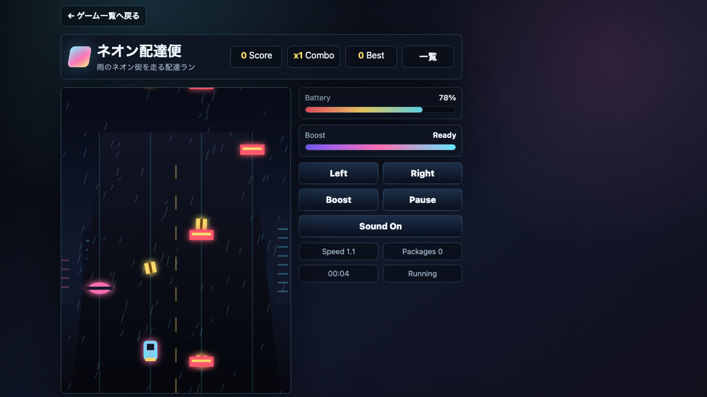

遊び方
- 4つのレーンを移動しながら走ります。
- 荷物を拾ってスコアとコンボを伸ばします。
- 障害物に当たらないようにタイミングよく移動します。
アクション / 無料ブラウザゲーム
ネオン配達便は、雨のネオン街で荷物を拾いながら走る無料ブラウザランアクションゲームです。4レーン移動とBoostで短時間スコアアタックを楽しめます。

Boost中は判断が遅れると危険なので、障害物の少ない直線で使うとコンボを維持しやすいです。
スマホ・PC対応。インストール不要で、ブラウザから無料でプレイできます。
ネオン街で荷物を拾いながら障害物を避ける無料ブラウザランアクションゲームです。 荷物を拾う爽快感と障害物を避ける緊張感がまとまっていて、暇つぶしでもテンポよく遊べます。
ランゲーム、反射神経ゲーム、コンボ更新が好きな人におすすめです。Boostは障害物が少ない直線で使うと、失速せずにコンボを伸ばせます。
はい。無料ブラウザゲーム広場では、インストール不要で無料プレイできます。
スマホ・PC対応です。スマホでは画面上のボタンをタップしてレーン移動とBoostを操作できます。
プレイ時間の目安は約1〜3分です。短時間で遊べるミニゲームを探している人にも向いています。
ネオン配達便と近い無料ブラウザゲームを、目的や端末別の入口から探せます。